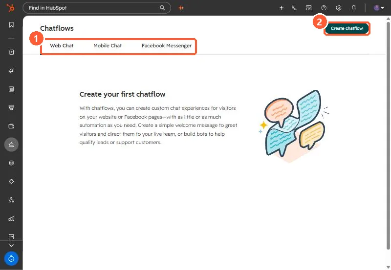

Short answer
HubSpot's KB: chat widget colors default to your account branding; pick a preset or enter a hex value. Choose the chat heading name and avatar. In help desk, the Configure tab sets accent color, font and positioning, plus triggers for when it appears. Welcome messages are set in the chatflow editor.
1. Chatflows
Chatflows in my demo portal.


2. Which pages
See chatflow targeting.